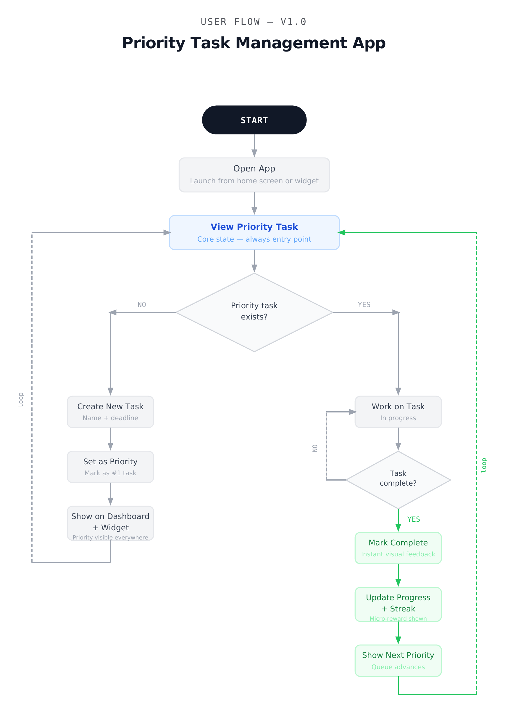
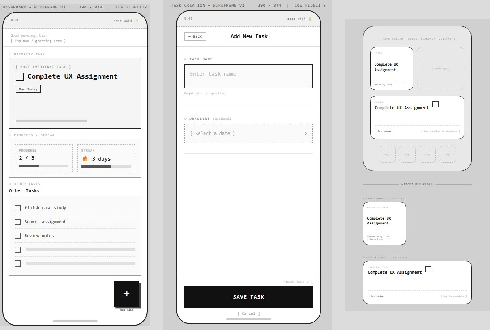
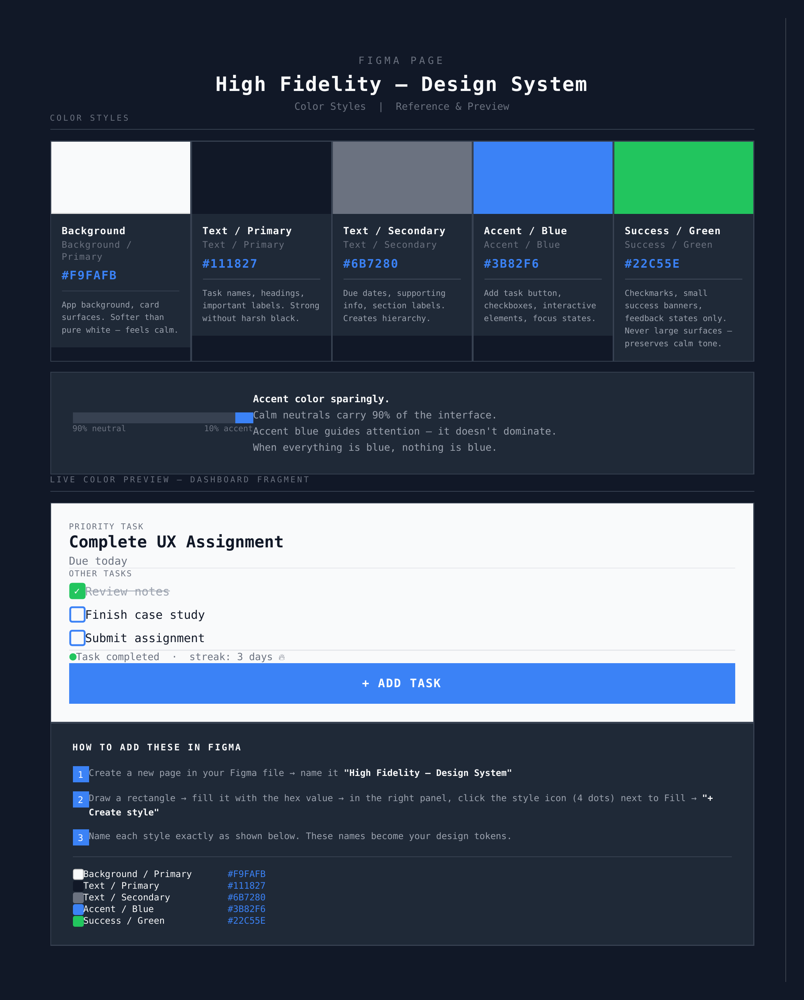
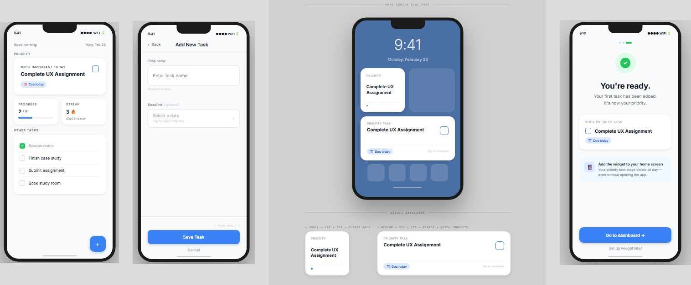

Priority
Designed a mobile task app that solves visibility, not complexity, to help students stay on track.
A focused mobile task management concept where the most important task stays visible until it is completed, removing dependency on memory and repeated reminders.
Explore the full interactive prototype
View Prototype →Tasks don't get forgotten. They become invisible.
While managing my own assignments, I noticed something unexpected. I wasn't forgetting tasks because I didn't care about them. I was forgetting them because they weren't visible at the right time.
Most task management apps depend on users to actively open the app and check their tasks. This creates a dependency on memory. If the user doesn't remember to check, even important tasks stay hidden.
After speaking with students, the same pattern appeared. Most used Notion, Google Tasks, Calendar, or sticky notes — and still faced the same problems:
- Forgetting deadlines
- Tasks getting buried among other items
- No clear visibility of the most important task
- Lack of clarity on progress
Interestingly, some students preferred sticky notes over digital tools because sticky notes stayed physically visible and were harder to ignore.
The problem was not task creation. The problem was task visibility.
Forgetting tasks is a visibility problem, not a motivation problem.
Most digital task tools rely on reminders and notifications. But reminders are temporary — they appear briefly and disappear. Over time, users start ignoring them or dismiss them without action.
Physical reminders like sticky notes work because they remain visible in the user's environment. They don't depend on memory or active effort to check.
The goal is not better reminders. It is persistent visibility.
This insight became the foundation for the entire solution.
One priority task. Always visible.
Instead of managing multiple tasks equally, the system highlights one priority task at a time. Rather than presenting long task lists, the experience brings the most important task to the forefront and maintains passive visibility through home screen widgets.
This approach removes dependency on memory and repeated reminders. The system keeps the task visible in the user's daily environment, making action more likely. The goal was a calm, focused experience that helps users complete what truly matters.
How I built it
Defining the Core Flow
Mapped the core user journey across three key moments: adding a task, staying aware of the task, and completing the task. This ensured visibility and clarity throughout, not just on the dashboard.

Core visibility flow — illustrating the behavioral loop from task awareness to completion
Low-Fidelity Wireframes
Created wireframes to prioritize the most important task, reduce visual clutter, and create a calm focused layout. This allowed quick structural validation before visual design.

Early wireframes exploring layout, hierarchy, and priority visibility before visual styling
Design System
Defined a simple design system including colors, typography, and spacing. The goal was a visual language that supports clarity rather than distraction. 90% neutral, 10% accent — so the blue only draws attention when it matters.

High Fidelity design system — color styles, typography, and spacing tokens
High-Fidelity Design
Translated wireframes into final screens focused on strong visual hierarchy, clear priority indication, minimal interface, and consistent interaction patterns across dashboard, task creation, widget, and completion states.

Final high-fidelity screens — dashboard, task creation, home screen widget, and onboarding
What students said
After designing the prototype, I shared it with a few students and asked them to explore the flow.
- Most participants immediately understood the idea of focusing on one priority task instead of managing long lists
- Constant visibility through widgets was seen as genuinely useful for reducing forgetting
- One piece of feedback highlighted that users may occasionally feel overwhelmed by a single task — suggesting the need for a snooze or postpone option
The core idea resonated. The next iteration would add flexibility without losing focus.
What I delivered
- A complete mobile task app concept solving visibility rather than adding complexity
- User flow mapping the full behavioral loop from awareness to completion
- Low and high fidelity designs across dashboard, widget, task creation, and onboarding
- A defined design system with color tokens, typography, and spacing
- A clickable Figma prototype simulating the core product experience
What I learned
- Identifying the root cause before designing solutions leads to better outcomes
- Small shifts in visibility can significantly impact user behavior
- Using hierarchy to guide attention is more powerful than adding more features
- Designing systems that support behavior, not just actions, creates lasting value
- A simple design system enforces consistency and builds trust in the product